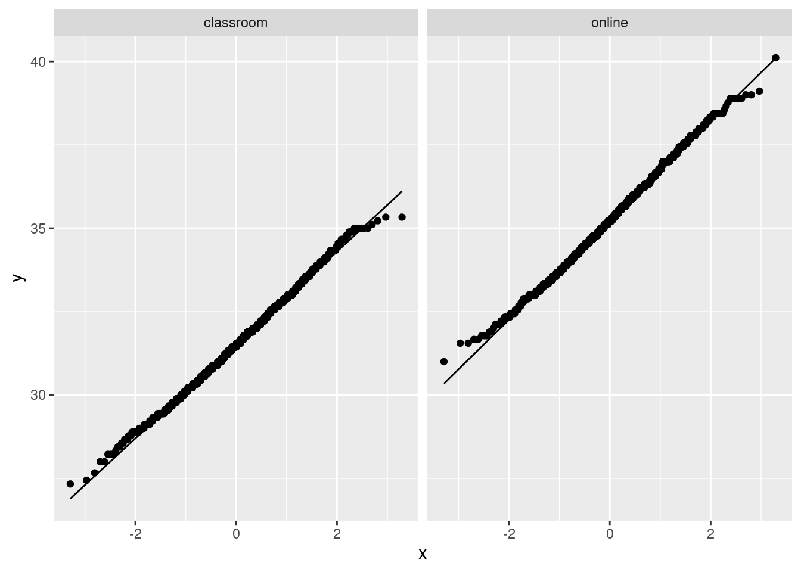

library(tidyverse)15 Learning to code
A programming course, Comp Sci 101, can be taken either in-person, by attending a class at fixed days and times, or online, by doing sessions that can be taken at times the student chooses. The course coordinator wants to know whether students taking the course in these two different ways learn a different amount, as measured by their scores on the final exam for the course. This example comes from the before-times, so the final exam was taken in person by all students. The final exam was out of 45 marks. A total of 18 students took part in the study. Each student was allowed to choose the section they preferred. The data are in http://ritsokiguess.site/datafiles/proggo.csv.
Write a report of a complete and appropriate analysis of these data. Your report should include a description of the data in your own words, any necessary pre-processing steps, appropriate graphs, statistical analysis, assessment of assumptions for your preferred analysis, and a statement of conclusions. Imagine that your report will be read by the department Chair, who does not know about this study, and who still remembers some of their first-year Statistics course.
Solution
My report follows. The occasional appearance of “(see note \(x\))” from time to time indicates some extra discussion, at the end. Ignore those on your first read-through. Your report doesn’t have to be the same as mine, but it should be complete and coherent, and readable by someone with a first course in Statistics.
15.1 Introduction
Do students learn programming more or less effectively from an online course, completed on their own time, compared with a regular in-person lecture course that meets at the same times every week? In Comp Sci 101, a study was carried out in which 18 students, 9 each in the online and in-person sections, were assessed for learning by means of the course final exam (out of 45 marks). We compare the mean final exam scores for the students in the two sections.
15.2 Data and pre-processing
We begin by reading in the data:
library(tidyverse)my_url <- "http://ritsokiguess.site/datafiles/proggo.csv"
prog0 <- read_csv(my_url)Rows: 9 Columns: 2
── Column specification ────────────────────────────────────────────────────────
Delimiter: ","
dbl (2): online, classroom
ℹ Use `spec()` to retrieve the full column specification for this data.
ℹ Specify the column types or set `show_col_types = FALSE` to quiet this message.prog0The nine students in each section are in separate columns. This is not an appropriate layout for analysis because each row contains data for two separate, unrelated students, and we need to have each student’s score in its own row. (See note 1.) This means making the data longer (see note 2):
prog0 %>% pivot_longer(everything(),
names_to = "instruction",
values_to = "mark") -> prog
progNow everything is arranged as we need, and we can proceed to analysis.
15.3 Analysis
We begin by visualizing the data. With one quantitative variable mark and one categorical variable instruction, a boxplot will give us an overall picture (see note 3):
ggplot(prog, aes(x= instruction, y = mark)) + geom_boxplot()
It looks as if the average (median) mark is somewhat higher for the students in the online section. In addition, both distributions look reasonably symmetric with no outliers, and they appear to have similar spread. (see note 4.)
With that in mind, it seems sensible to compare the mean final exam marks in the two groups by a pooled two-sample \(t\)-test, in order to see whether the apparent difference in performance is any more than chance. The aim of the course coordinator was to see whether there was any difference between the two sections, without having any prior idea about which teaching method would be better, so a two-sided test is appropriate: (see note 5.)
t.test(mark~instruction, data = prog, var.equal = TRUE)
Two Sample t-test
data: mark by instruction
t = -1.6495, df = 16, p-value = 0.1185
alternative hypothesis: true difference in means between group classroom and group online is not equal to 0
95 percent confidence interval:
-8.379039 1.045706
sample estimates:
mean in group classroom mean in group online
31.55556 35.22222 The P-value of 0.1185 is not smaller than 0.05, so there is no evidence of any difference between the mean final exam marks of the students in the two sections. The difference between the two groups shown on the boxplot is the kind of thing that could be observed by chance if the students were performing equally well under the two methods of instruction. (See notes 6 and 7.)
This \(t\)-test comes with the assumption that the data in each group come from a normal distribution, at least approximately. With two small samples, this will not be easy to assess, but we can at least look for any gross violations, using a normal quantile plot for each group:
ggplot(prog, aes(sample = mark)) + stat_qq() + stat_qq_line() +
facet_wrap(~instruction)
The largest observation in the classroom group and the largest two observations in the online group are a little bigger than expected, but they were not big enough to be flagged as outliers on the boxplots, so I conclude that the normality is good enough to justify the \(t\)-test that we did. (See note 8.)
15.4 Conclusions (see note 9)
We found that there is no significant difference in the performance of the students learning in the classroom compared to those learning online. Before leaping to generalize to other classes, however, we should note two limitations of the study (see note 10):
- the sample sizes were very small; if we had observed this size of difference between the two groups in larger samples, we might have been able to show that the difference was significant.
- we have no information about how the students were allocated to the groups, and it seems likely that the students were allowed to choose their own method of instruction. If the students had been randomly allocated to instruction method, we could have been more confident that any differences observed were due to the instruction method, rather than also having something to do with the relative ability of the students who chose each instruction method.
We feel that it would be worth running another study of this type, but with larger sample sizes and randomly allocating students to instruction types. This latter, however, risks running into ethical difficulties, since students will normally wish to choose the section they are in.
Thus ends the report.
Notes:
Say something about the kind of data layout you have, and whether it’s what you want.
You can do a \(t\)-test without rearranging the data (the method is that of the “all possible \(t\)-tests” discussion in the ANOVA section), but if you try to draw plots with the data laid out that way, you will at best be repeating yourself a lot and at worst get stuck (if you try to make side-by-side boxplots). The right format of data should give you no surprises!
I split the pivot-longer onto several lines so that it wouldn’t run off the right side of the page. Recall that R doesn’t mind if you have it on one line or several, as long as it can tell that the current line is incomplete, which it must be until it sees the closing parenthesis on the pivot_longer.
A normal quantile plot is also justifiable here, but I think it would take more justification, because you would have to sell your reader on the need for normality this early in the story. A standard plot like a boxplot needs no such justification; it just describes centre, spread and shape, exactly the kind of thing your first look at the data should be telling you about.
Say something about what the graph is telling you. It makes sense to do as I did and look forward to the kind of inference you are going to try. If you do a normal quantile plot here, you can formally assess the assumptions before you do the test, which you might argue makes more sense, rather than doing a second plot and assessing the assumptions later as I do.
You might be able to justify a one-sided test here, along the lines of “is the online instruction significantly worse?”, but in any case, you need to justify the one-sided or two-sided test that you do.
Conclusion in the context of the data, as ever. Writing “we fail to reject the null hypothesis” and then stopping invites your reader to ask “so what?”.
You might have chosen to do a different test, but your choice needs to be properly justified. I think the pooled \(t\)-test is the best choice here. If you thought those marks were not normal enough, then you need to do Mood’s median test, explaining why. That comes out like this:
median_test(prog, mark, instruction)$grand_median
[1] 33
$table
above
group above below
classroom 3 6
online 6 3
$test
what value
1 statistic 2.0000000
2 df 1.0000000
3 P-value 0.1572992The (two-sided) P-value is a little bigger than the one for the pooled \(t\)-test, but the conclusion is the same. (If you think the test should be one-sided, justify dividing your P-value by 2, if you can. In the case that your one-sided alternative was that classroom teaching was better, you cannot reject the null in favour of that, because the online students actually have better marks in these samples. In that case, halving the P-value would not be justifiable.)
If you thought that the normality was all right, but the equal spreads was not, you will need to justify the unequal spreads. Perhaps the best way here is to say that you are unsure whether the spreads are close enough to equal, so you are doing the Welch test to be safe. That looks like this:
t.test(mark~instruction, data = prog)
Welch Two Sample t-test
data: mark by instruction
t = -1.6495, df = 15.844, p-value = 0.1187
alternative hypothesis: true difference in means between group classroom and group online is not equal to 0
95 percent confidence interval:
-8.382820 1.049486
sample estimates:
mean in group classroom mean in group online
31.55556 35.22222 As you see, the P-values of the pooled and Welch \(t\)-tests are almost identical (which is what I was guessing), but to do the Welch test without comment reveals that you are not thinking about which of the two tests is more appropriate here. In the real world, you might get away with it (for these data, the conclusions are the same), but in this course I need to see that your thought process is correct.
A final observation in this note: all three tests give you similar P-values and the same conclusion, so that in the end it didn’t really matter which one of them you did. When that happens, it’s usually (as here) a sign that a \(t\)-test will be best, because it makes the best use of the data (and thus you will get the most power in your test). I cannot stop you doing all three tests behind the scenes and using this to help decide, but strictly speaking your P-value will not be what you say it is, because these tests (really, any tests) are designed so that the test you choose is the only one you do. In any case, your report should include only the one test you thought was most appropriate. Your reader does not have the time or patience for a detailed comparison of the three tests.
- You might have combined the assessment of assumptions with your first plot, particularly if you chose a normal quantile plot instead of a boxplot there. As long as you have assessed normality (and equal spreads, if you are happy with the normality) somewhere, this is fine. In particular, if you ended up doing a Mood median test, you have presumably already decided that the normality was not good enough, and (I hope) you already discussed that somewhere.
Again, bear in mind who is (in the setup that we have) reading your report: someone who might remember about \(t\)-tests and normality. Ideas like the bootstrap are far too advanced to go into a report like this. If you must include something like that, you need to put it in an appendix, not the main body of the report, so that the person reading your report can get the main ideas without having to wade through that.
The rest of this note is an Extra:
Here is a slightly different way to approach the bootstrap in this case, that takes care of assessing the normality of both groups at once.
The first step is nest_by, which does two things, one of which is invisible:
prog %>% nest_by(instruction)This (visibly) creates a list-column containing two mini dataframes data. They are the original data with all the data except instruction in each one: that is, the other column mark. The top one is the nine marks for the students in the classroom section, and the bottom one is the nine marks for the students in the online section. The invisible thing is that nest_by includes a rowwise, so that what we do after this is one for each row, one at a time.
What we do next is to generate a lot of bootstrap samples, for each group. First, a vector of simulation numbers, one for each method of instruction. This only needs to be said once because nest_by is like group_by:
prog %>% nest_by(instruction) %>%
mutate(sim = list(1:10))Then we need to unnest those sims, so that we can put a bootstrap sample next to each one:
prog %>% nest_by(instruction) %>%
mutate(sim = list(1:10)) %>%
unnest(sim)Now we draw a bootstrap sample from the data to the left of each sim (the ones next to classroom are the in-person ones, and the ones next to online are the online ones, so we will be taking bootstrap samples of the right thing). This here is where the rowwise goes:
prog %>% nest_by(instruction) %>%
mutate(sim = list(1:1000)) %>%
unnest(sim) %>%
rowwise() %>%
mutate(the_sample = list(sample(data$mark, replace = TRUE))) %>%
mutate(the_mean = mean(the_sample)) %>%
ggplot(aes(sample = the_mean)) + stat_qq() +
stat_qq_line() + facet_wrap(~instruction)
These are close to their lines, which tells me indeed that the two-sample \(t\)-test I did was perfectly reasonable.
As I say, though, this is very much for you, and not for the report, given who would be reading it. If you were doing a presentation on this, the bootstrap stuff is something you would keep in reserve in case someone asks about the appropriateness of the \(t\)-test, and then you could talk about it, but otherwise you wouldn’t mention it at all.
You definitely need some conclusions. If the department chair is busy (quite likely), this is the only part of the entire report they may be able to read.
This is the place to put limitations, and recommendations for next time. The sample size one is (I hope) obvious, but you can also get at the other one by asking yourself how the students were assigned to instruction methods. The classical comparative study assigns them at random; that way, you know that the two groups of students are at least supposed to be about equal on ability (and anything else) before you start. But if the students choose their own groups, it might be that (say) the weaker students choose the classroom instruction, and in that case the reason the online group came out looking better might be that they were stronger students: it could have nothing to do with the effectiveness of the learning environment at all.
\(\blacksquare\)